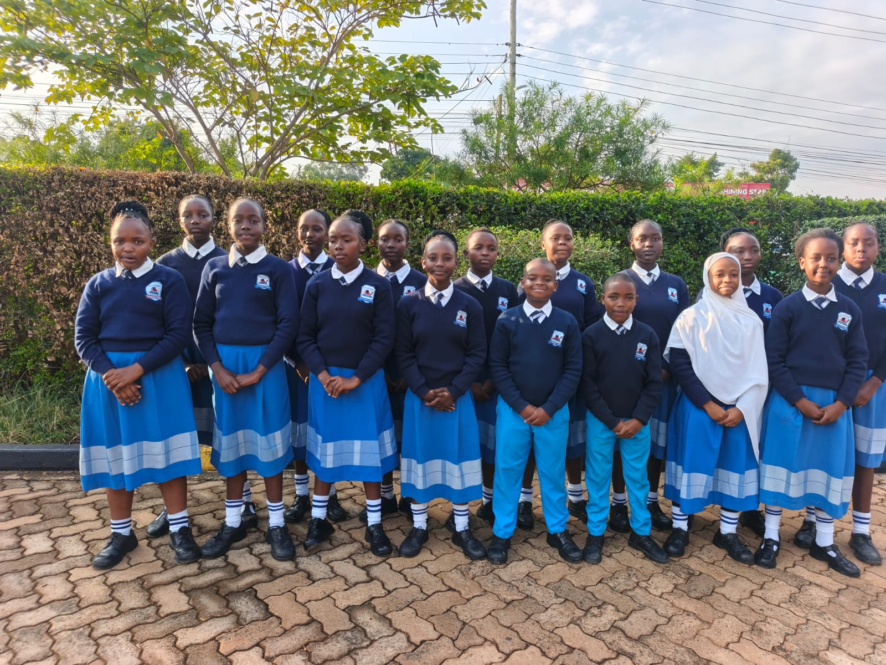
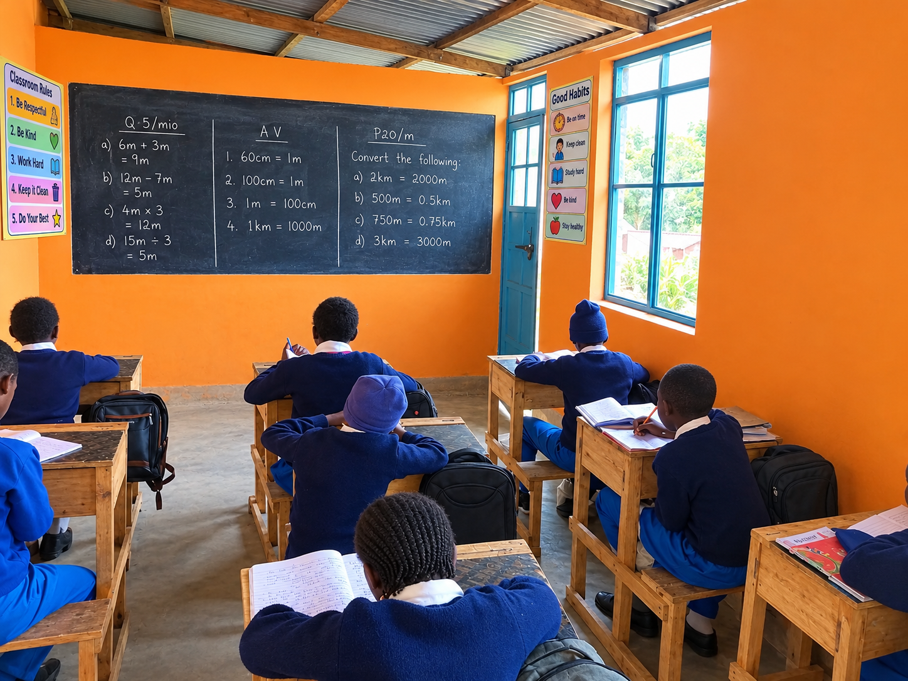
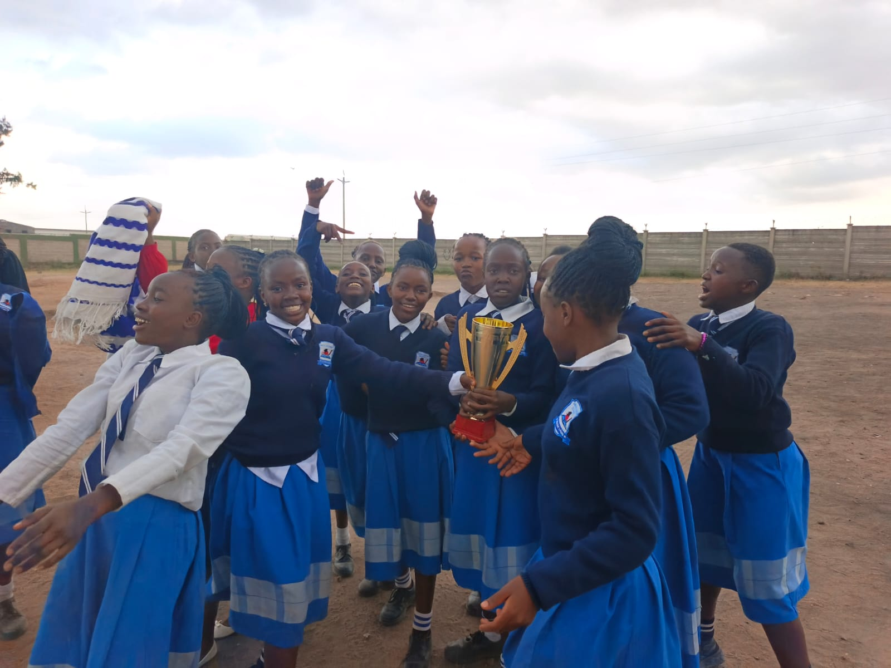

Strong academic foundation
Structured learning from early years through primary and junior secondary, with attention to understanding, confidence and steady progress.
A school experience built around learning, character, confidence and a strong partnership with families in Athi River.

From Play Group through Junior Secondary, Sewa Academy aims to give learners a supportive foundation for the next stage of their education.
Parents are looking for more than a classroom. They want a school where children can learn with confidence, develop good character, discover their abilities and feel part of a caring community.
At Sewa Academy, academic learning is combined with co-curricular activities, outdoor experiences, leadership opportunities and close attention to each learner's growth.
Practical reasons to consider Sewa Academy for your child's education in Athi River.
Structured learning from early years through primary and junior secondary, with attention to understanding, confidence and steady progress.
We encourage respect, responsibility, integrity, service and positive relationships alongside academic development.
A supportive school community where teachers can understand learners' strengths, needs and areas for improvement.
School transport is available for families within Athi River and surrounding areas. Parents can contact the school to confirm routes, availability and current charges.
Sports, arts, music, clubs, scouts, trips and other activities give learners opportunities to build confidence and teamwork.
Conveniently based near Slota House in Athi River, serving families looking for a private school within the local community.
Learning should be meaningful, active and memorable.

Purposeful lessons and a supportive environment that encourages learners to participate and develop confidence.

Creative and physical activities help children discover interests, practise teamwork and build healthy confidence.

Trips, outdoor learning and school activities help learners connect what they learn with the wider world.
Talk to Sewa Academy about admissions, school visits, available places and transport options.
Enquire About Admission